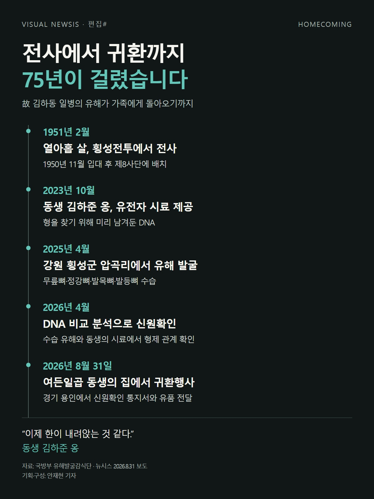
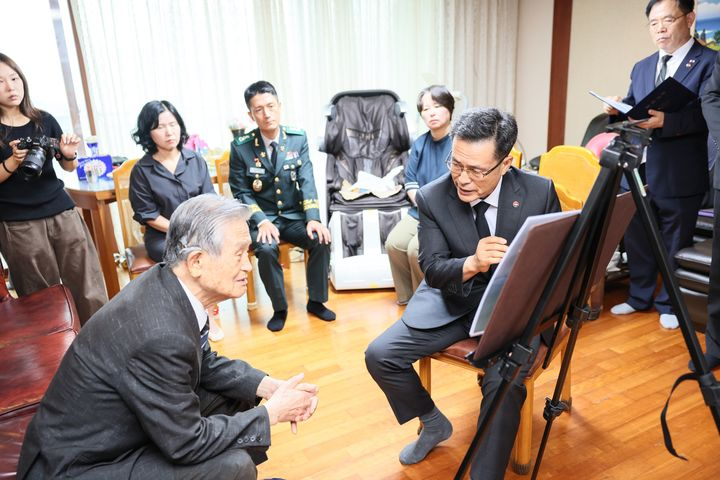
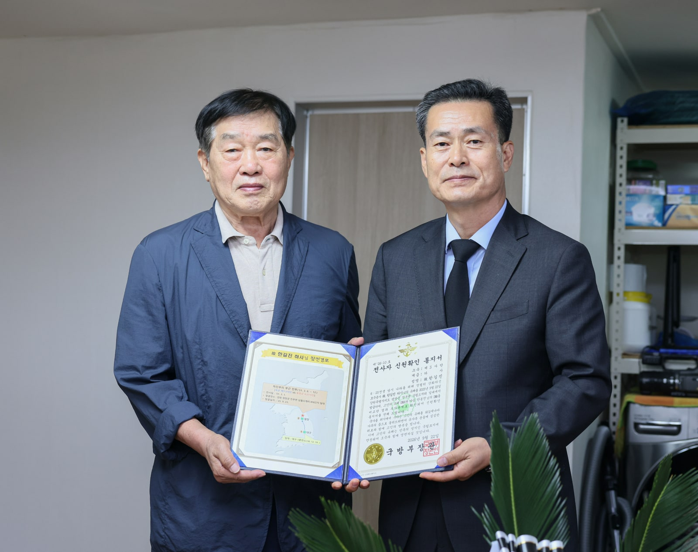

열아홉에 떠난 형, 여든일곱 동생 곁으로…75년 만의 귀환[편집샵]
1951년 횡성전투서 전사한 김하동 일병
동생이 남긴 DNA로 신원확인…8월 31일 가족 품으로

[서울=뉴시스] 안재현 기자 = 열아홉에 전장으로 떠난 형이 돌아왔다. 형을 기다리던 동생은 여든일곱 살이 됐다.
1951년 2월 강원 횡성전투에서 전사한 고(故) 김하동 일병. 75년 만에 돌아온 것은 고작 뼈 몇 조각이었다. 무릎뼈와 정강뼈, 발목뼈와 발등뼈. 국방부 유해발굴감식단은 일부만 남은 유해에서 그의 이름을 확인했다.
지난 8월 31일 경기 용인에 있는 동생 김하준 옹의 집에서 ‘호국의 영웅 귀환행사’가 열렸다. 국유단은 유가족에게 신원확인 통지서와 유품을 전달했다.
김 일병은 1932년 1월 경북 경주에서 태어났다. 열여덟 살이던 1950년 11월 대구 육군 제1훈련소에 입대했고, 제8사단에 배치됐다. 이듬해 2월 횡성전투에서 중공군의 공세에 맞서다 전사했다.

형을 찾을 단서는 동생이 먼저 남겨뒀다. 김하준 옹은 2023년 10월 유전자 시료를 제공했다. 2025년 4월 횡성군 서원면 압곡리에서 유해가 발굴되자, 국유단은 수습한 유해의 DNA와 동생의 시료를 비교했다. 올해 4월 형제 관계가 확인됐다.
전사한 곳에서 유해를 찾는 일, 그 유해가 누구인지 밝히는 일, 가족에게 소식을 전하는 일. 김 일병의 귀환에는 75년이 걸렸다.

동생은 “형님을 유전자 검사로 찾았다고 하니 우리나라가 선진국이 된 것을 새삼 느낀다”며 “이제 한이 내려앉는 것 같다”고 말했다.
비주얼 뉴시스 편집# ‘작은 뼈 조각으로, 가족 품에 안긴 김하동 일병’은 이 기다림을 따라간다. 화면을 내려도 한동안 연도만 바뀐다. 1951년을 떠나 2025년에 닿기까지, 손끝으로 넘겨야 하는 시간이 길게 이어진다.

귀환은 이어지고 있다. 지난 9월 22일에는 고 한길진 하사의 귀환행사가 열렸다. 아들 한봉진 씨는 여든세 살이었다.
형을 기다리는 동생, 아버지를 기다리는 아들. 오랜 세월이 흐른 뒤에도 가족은 이름을 기억하고 있었다.
비주얼 뉴시스에서 김하동 일병의 75년 만의 귀환을 만나보세요. (https://visual.newsis.com/homecoming/)